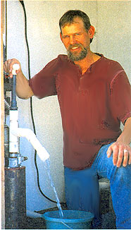
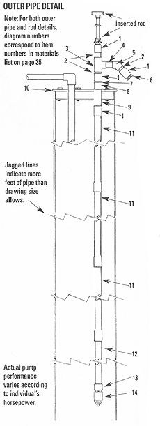
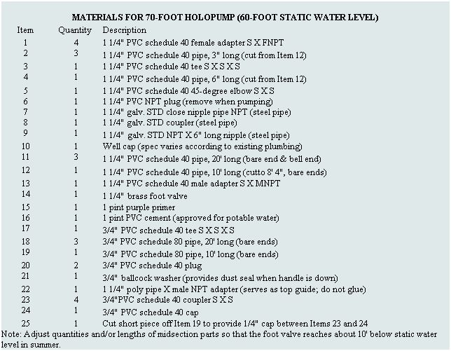
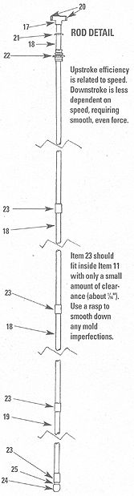

A do-it-yourself PVC
manual well pump.
Out of frustration, I hit the drawing board, determined to devise a solution. The result is an invention I've dubbed the "Holopump," a PVC manual well pump capable of efficiently drawing water from as deep as 60 feet. All of the parts are available from, or can be ordered through, most any hardware store... at a cost of only about $120 for the whole shebang.
The design is amazingly simple: An inner pumping rod, fitted at the end with a coupler and cap, is slipped into an outer water pipe. With each downstroke of the pumping rod, water equal to the volume of the rod rises into the pipe; this is what's known as positive displacement, and it happens regardless of the force or speed of the downward stroke. It's best, in fact, to keep the downstroke slow and deliberate. It's on the upstroke that you need to pick up the pace: This stroke needs to be quick enough so that fresh water enters the pipe before what's already gone up drains around the coupler and end cap. That way, pushing down or pulling up, you're drawing water. A simple foot valve at the end of the water pipe prevents water from draining back into the well.
Pumping water from a depth of 60 feet below ground requires a minimal effort of about 15 to 20 pounds for the upstroke and about 25 to 30 pounds for the downstroke (it's a force even my 12-year-old daughter can muster). Water comes out of the spout on both the upward and downward strokes. By pushing down slowly and steadily and pulling up quickly, using the appropriate force, you can expect to draw two to three gallons a minute from a well with a static water level of 60 feet - without breaking a sweat.
It's important to distinguish between these two concepts: Well depth is the distance from ground level to the bottom of your well. Water level is the distance from mound level to the surface of your well water. A person may have a 175-foot well, but a static water level of 30 feet. In such a case, a 40-foot Holopump (made with two 20-foot lengths of pipe) would work just fine.
The plans on these pages are for a 70-foot-long Holopump, which is perfect for a well with a 60-foot static water level. Although I know that some people have successfully gone a little deeper with my design, I still say the 60-foot model (using 70 or 80 feet of pipe) is the practical depth limit for this pump, and so that's the maximum length I am willing to recommend. (To build an 80-foot-long pump, simply replace the last segment of both the rod and water pipe with 20-foot lengths of PVC, rather than the 10-foot lengths shown in the plans.)
While the Holopump is fairly easily assembled, getting it down your well properly is a bit more complicated. If you have never worked on or are unfamiliar with the existing components of your well, it may be worth it to hire a professional to handle the installation.
Should you opt to go the do-it-yourself route, a word of caution: Before beginning any work that involves altering existing plumbing or wiring, the electric power supply must be shut off and there can be no pressure in the water lines (open the faucet nearest the well and wait for the water flow to stop). Diluted chlorine should be used to wash all pipes as they are installed.
You'll also want to make sure that the pump you install complies with any pertinent codes or laws in your area.
Before you begin, read through the instructions, gather tools and materials, then proceed as follows:
1) Examine your existing well cap configuration, then purchase a new one with an additional port for a 1 1/4" pipe. You may have to drill a hole in the new cap for either the air vent or wiring access hole. If your existing electric submersible pump uses torque arresters, they may need to be modified or removed, depending on design, at your discretion.
2) Glue the rod section together, as shown here, following the instructions on the primer and cement product cans (see Materials, Items 15 & 16).
3) Glue and screw the lower main pipe section together, as shown on the first illustration. This includes items passing through the well cap (Item 9) and below. Bevel inside edges to allow easy insertion of the rod section later. Allow ample cure time for all glued PVC joints.
4) Before installing the pump and new well cap, you'll need to remove the old cap. If you're familiar with your existing well plumbing, you can gauge how much weight you will be dealing with. Get a safety rope on any equipment below the old cap before freeing the cap completely. You definitely don't want to lose anything down your well. Get someone strong to help you. (You may want to hire a well technician, if only to use his hoisting equipment!)
5) Feed the main pipe section into the well. Two strong people can do this by having one person at the foot valve end and the other about 30 feet up on the pipe. Working together to create an arc with the pipe, allow the foot valve end to snake itself down the well casing, being careful not to bend it too sharply. Be gentle, too, with the existing wiring and pipes. Again, use a safety rope. Poke the metal pipe section up through the well cap and thread the steel coupler (Item 8) on tight. Reinsert the original plumbing and tighten the cap.
6) Assemble the spout section in place. Gluing of the spout section is optional. Feed the rod down the main pipe. The bottom of the rod section must reach below the static water level when it is retracted.
That's it. You're set to begin pumping. It takes a little practice to get the most wa ter per calorie burned, but just remember to push down slowly and steadily and pull up quickly for maximum efficiency.
A final warning: The addition of any type of mechanical well pump provides a potential new pathway for bacteria to enter your water supply. There are many chlorine-based solutions that will kill bacteria in water, and as a well owner, you're likely familiar with one or two. If, however, you don't already have a standard procedure for ridding your well of bacteria, ask a local pump technician for his or her best recommendation. You will also want to have your water tested for bacteria after installing the pump.
Read more DO-IT-YOURSELF articles at www.motherearthnews.com
|
 John Hartz of Elmira, Oregon, demonstrates his Holopump |
|
 |
|
 |
 |
|